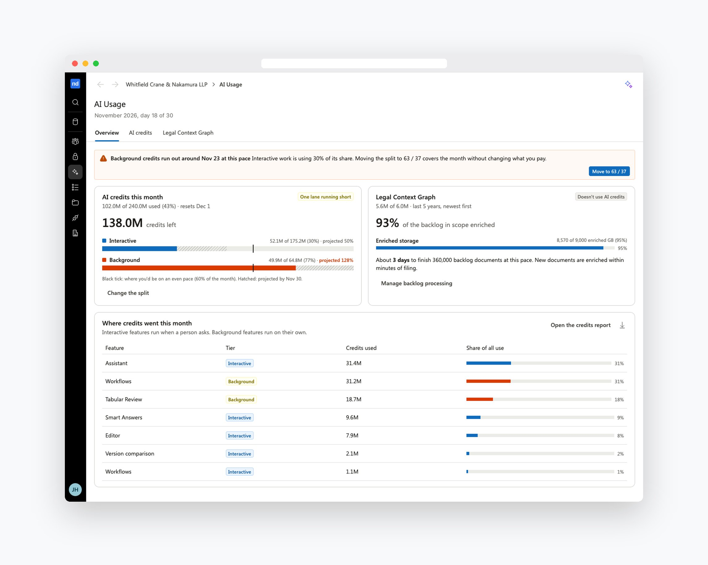
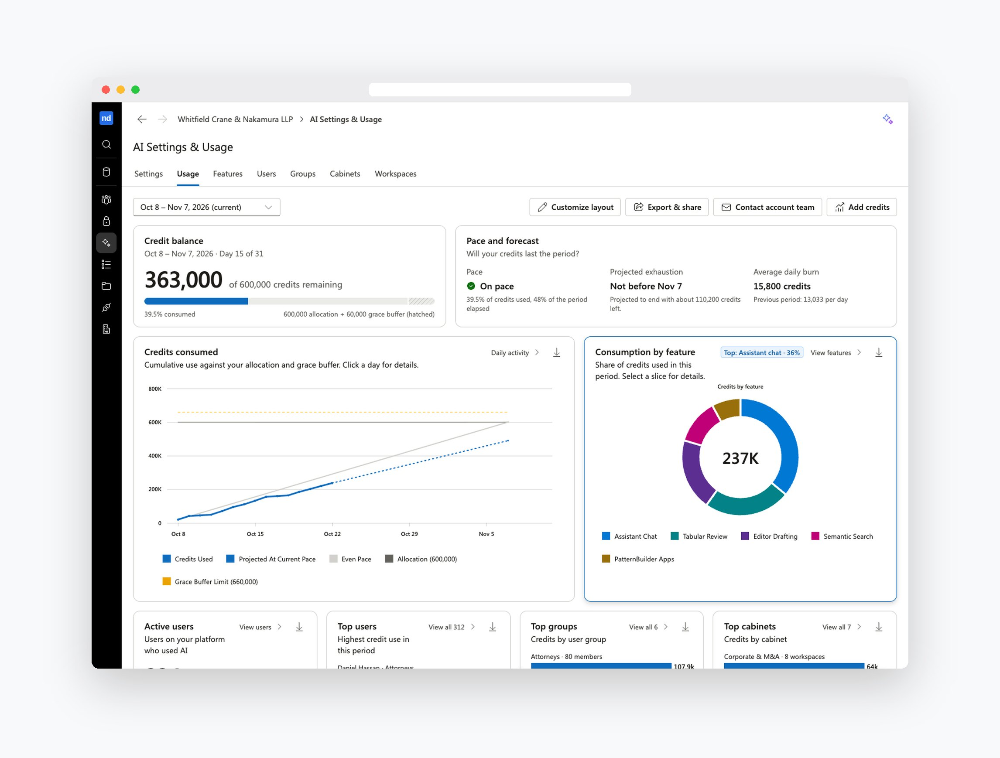
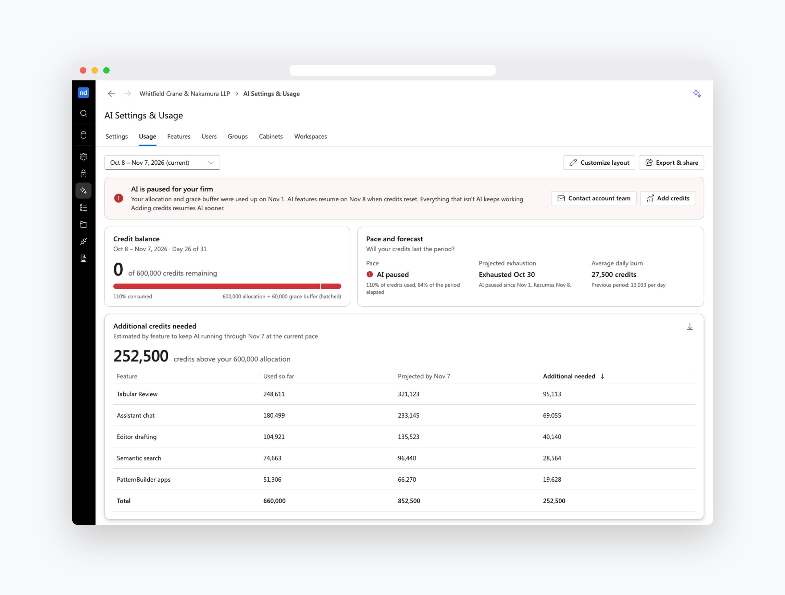
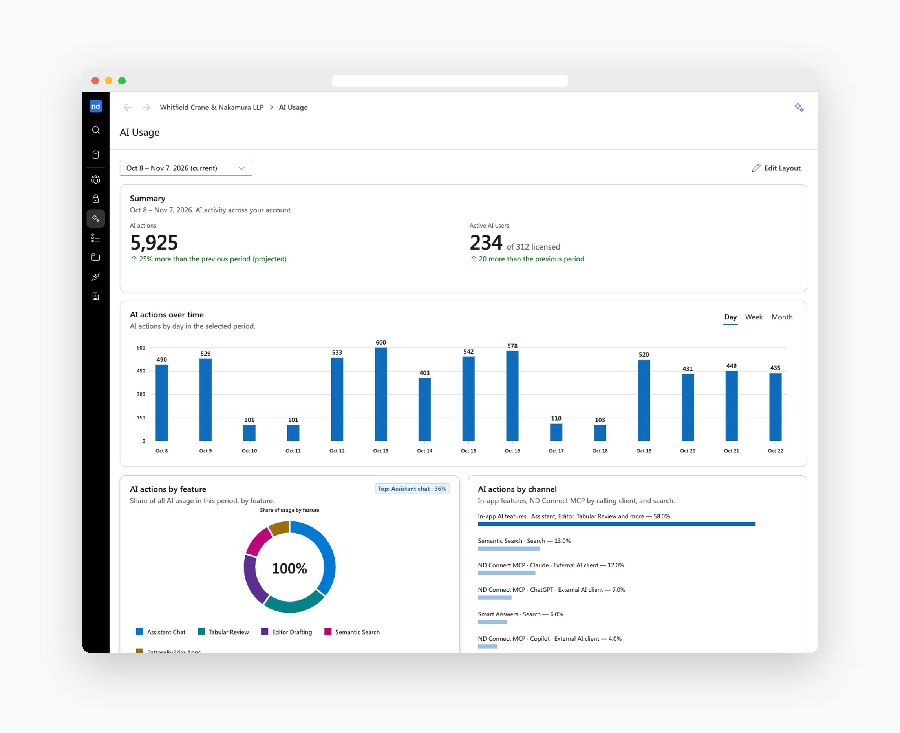
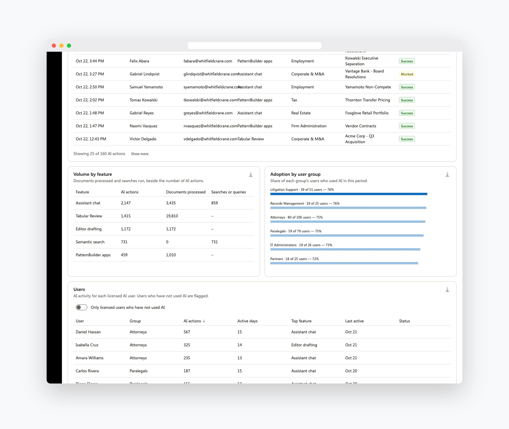
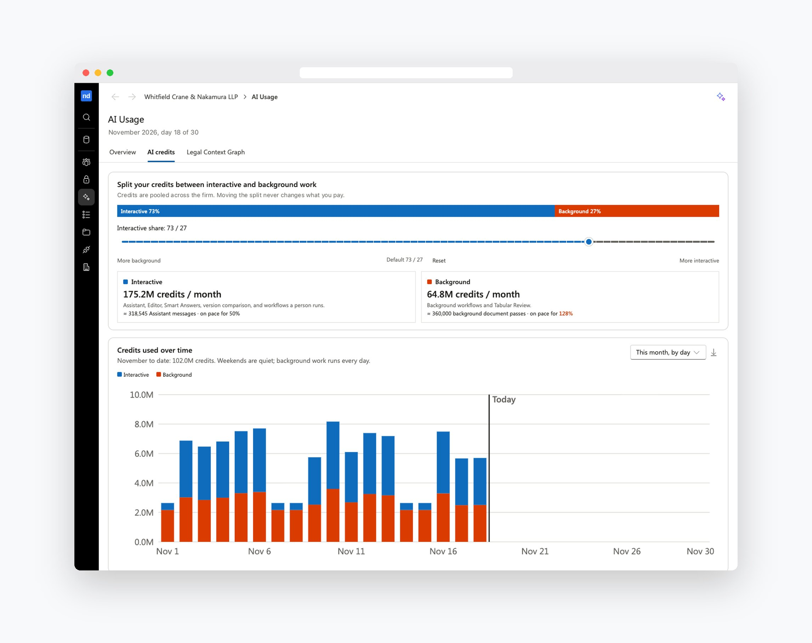
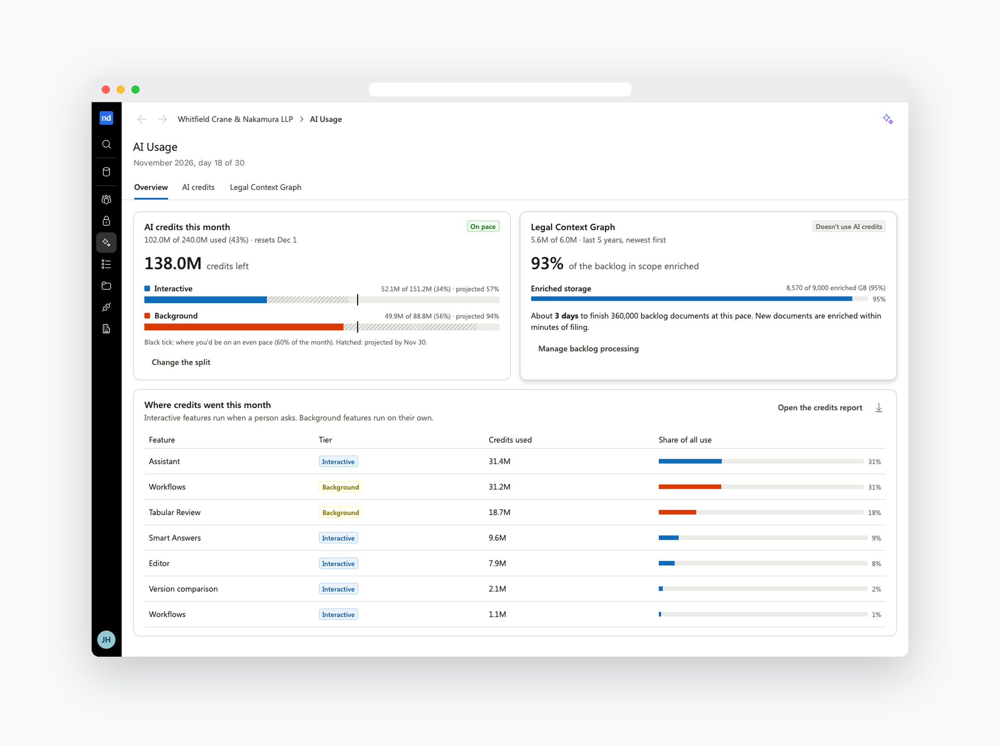
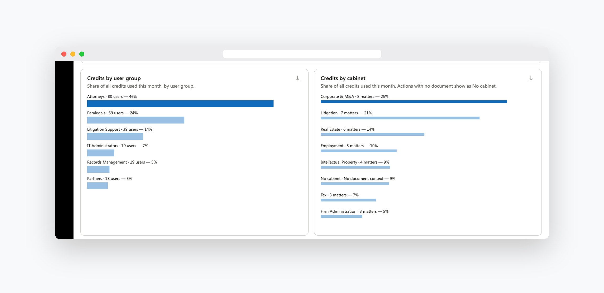
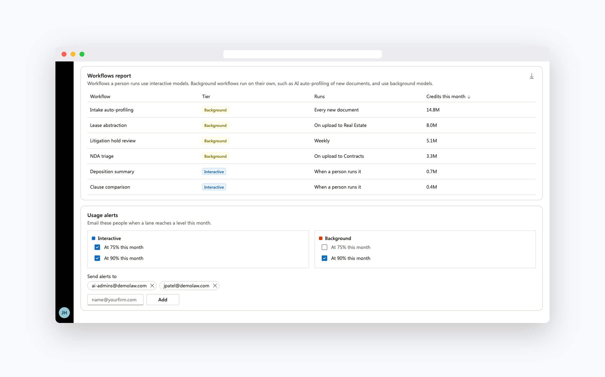
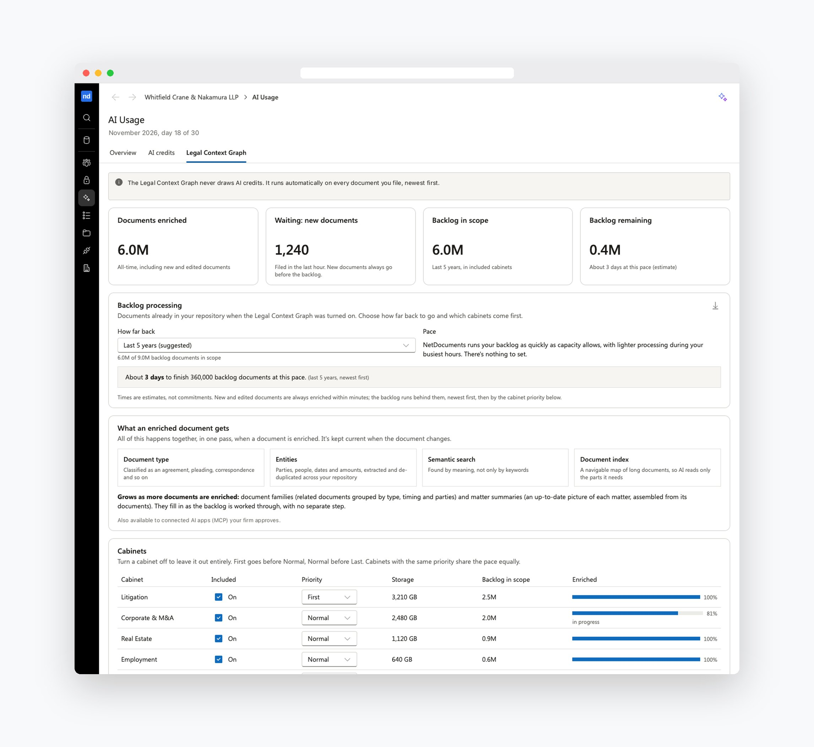

AI Usage
A net new page in the Admin Console that shows a firm how it is using AI: what it has spent, what is left, who is using it, and whether its documents are ready for AI to read.

Making AI spend something
an admin can read.
AI at NetDocuments is moving to a plan where a firm buys a pool of credits and every AI action draws from it. That is fair, but it gives admins a new job: making sure a month of AI lasts a month, without being able to see where it goes.
AI Usage is the page that answers that. It is net new: there was nothing in the Admin Console for it before. I designed it in three passes in about four weeks: a broad vision, a V1 scoped to the product manager's requirements, and a final design rebuilt around credits as the pricing model took shape. It also covers the Legal Context Graph, the document enrichment layer NetDocuments announced in May 2026, which runs on its own and never draws credits.
Design passes in about four weeks, each a working prototype rather than a static file
Priority levels, P0 to P2, switchable inside one prototype so the team could see scope before agreeing to it
Credit states designed from the start: healthy, approaching the limit, in a grace buffer, and paused
Sources: LawNext, May 2026
A meter nobody
could see.
When AI is priced by usage, three questions decide whether an admin trusts it. Will our credits last the month? Who and what is using them? And if something runs out, what can I do about it today, not next month?
Usage also comes in two very different shapes. Interactive work happens when a person asks for something, like a chat answer or a document comparison. Background work runs on its own, like profiling every new document as it is filed. A firm can burn through credits in the background without a single person noticing, so the page had to make both visible, and give the admin a lever.
Three passes, each one
narrower and sharper.
I designed the page end to end, working from the product manager's requirement cards, the credit pricing user stories, and a colleague's proposal for how pooled credits should behave. I built each pass as a working prototype inside the Admin Console shell, so reviews were about real behavior: what happens when you drag the split, what the page says when credits run low.
Halfway through, the pricing model changed. Instead of starting over, the final design merged the V1 structure with the credit proposal. Five decisions shaped it.
Overview first, detail in tabs
The Overview answers "where do we stand" in one screen: credits left, pace, the Legal Context Graph backlog, and where credits went. AI credits and Legal Context Graph each get a tab for the detail, so the first look never needs a scroll.
Two lanes against an even pace
Interactive and background credits each get their own bar, with a tick showing where an even pace would put you today and a hatched projection to the end of the month. "On pace" or "projected 128%" is read at a glance, with no math.
A split the admin can move
The pool is split between interactive and background work, and the admin can change it with a slider. When the projection says background credits will run out early, the Overview offers the fix in one click, such as "Move to 63 / 37", and says the bill does not change.
Keep the Legal Context Graph separate
Document enrichment is priced on a different basis than AI credits, so mixing them would have made both harder to read. It has its own tab, its own progress, and a "Doesn't use AI credits" label wherever it appears next to credits.
Reuse what V1 proved
Credits by user group and by cabinet reuse the ranked cards from V1, so the final design builds on patterns the team had already reviewed instead of inventing new ones.
From vision to V1
to the final design.
Pass one, the vision. A broad dashboard to show where this could go: balance, pace and forecast, consumption by feature, and tabs for users, groups, cabinets and workspaces. I designed the states that matter most with money involved, including what the page says when AI is paused because credits ran out.


Pass two, V1. Scoped down to the product manager's requirement cards, which counted AI actions instead of credits. I added a switch to the prototype that shows P0 alone, P0 and P1, or everything, so the team could see the cost of each priority level on the actual page before agreeing to it.


Pass three, the final design. Rebuilt around credits once the pricing model changed, merged with the pooled credit proposal, and extended to the Legal Context Graph.
AI Usage.





All firms, people and numbers in these screens are mock data.
Designing ahead
of the pricing.
Designing a page for a plan that is still being defined means finding the gaps before engineering does. Reviewing the packaging against the design, I raised six questions with product so the page and the plan would not drift apart.
Partial plans
A firm might own only part of the AI plan. The page should still make sense if it has credits but no document enrichment, or the reverse.
Connected AI apps
Do actions from outside AI apps connected to NetDocuments count against the same credits, and should they show here?
Where search lands
Which plan covers profiling and semantic search, and therefore which part of the page reports them.
The right unit
Whether document enrichment is measured per document or by storage, which changes every number on that tab.
Does the split survive
The interactive and background split is central to the design. It has to be confirmed in the final model.
Assigning people
Assigning credits to specific people is not designed yet, and may be needed for large firms.
Where it stands.
AI Usage is a prototype in design, not yet shipped, and no usage results exist yet. The next step is putting it in front of firm admins and confirming the open questions above. What the work has done so far:
Scope the team could see
The priority switch turned a list of requirement cards into a page the team could look at, which made P0 versus P1 a concrete conversation.
Ready when pricing changed
When the model moved from counting actions to credits, the design absorbed it in a pass instead of starting from zero.
Spending you can steer
Admins do not just watch credits run out. The page projects the month and offers the fix before it happens.
Gaps found early
Six packaging questions surfaced in design review, before they could become engineering rework.